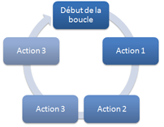

Action : Limited loop
This action allows to create a limited loop. A limited loop allows to execute, a number of time defined, a group of actions. It executes this group N times, unless the user asked it to stop before. We can illustrate this loop with the plan opposite.
Advice : To stop (go out) a limited loop before the end of it, use the action Exit loop.
Which is the difference with the Loop : A loop (simple) runs until we give it the order to stop. But a limited loop, runs a predefined number of time. Thank's to this we can, for example, execute the loop 10 times before it stops by itself.
How does a limited loop work ?
this action may seem difficult to use, but when we have understood it, that becomes a breeze.
First, the difference between the action Loop and the Limited loop is that a simple loop runs indefinitly. Instead, a limited loop runs a number of times specific. In fact, you can ask to a limited loop to runs 3 times, 10 times, 100 times [...] N times.
So a limited loop means this : we start from the number X, and we're going to the number N.
Note that in a loop limited the value X, which is the starting value, increment every time the loop is executed.
Example : We start from X = 0 To N = 3.
First run : X = 0
Second run : X = 1
Third run : X = 2
You can see that X not going to 3, because X is from 0.
So we can deduce the following formula : Number of execution of the limited loop = (N - X)
Example : We start from X = 0 to N = 10.
(N - X) = (10 -
0) = 10
The loop will run 10 times.
Example : We start from X = 25 to N = 30.
(N - X)
= (30 - 25) = 5
The loop will run 5 times.
The last thing you have to know is the step. In the previous examples, you could see that X is incremented by 1 each loop execution. The step of a loop is performed to increment each time. We can imagine the following example :
Example : We start from X = 0 to N = 6 with a step of 2.
First run : X = 0
Second run : X = 2
Third run : X = 4
Note : There is no fourth run, because when X reaches 6, the loop stops.
Parameters
| Parameters | Descriptions |
|---|---|
| Start the loop from a variable | Sets the variable (not array) with the starting value of the loop. This variable will be incremented by the step defined in the parameters "Step (optional)" (see examples above). |
| Whose value is | Selects the value of the variable defined in the previous setting. This value can be equal to a constant number, or the value of another variable (not array). |
| To | Allows you to choose the ending value of the loop (see examples above). This value can be equal to a constant number, or the value of another variable (not array), or the number of values contained in an array variable. |
| Step (optional) | Allows you to choose the step (default 1) of limited the loop (see examples above). This value can be equal to a constant number, or the value of another variable (not array). |
Mistake not to commit : For the parameters "Whose value is", "To" and "Step (optional)", be careful if you use variables that they have a numeric value (Integer, Decimal, Double) or that the variable is an array variable.
Note : To check the type of a value, use the action Get the type of a variable, in the General category.
Return value
No value is returned by this action
Code Visual Basic.Net generated by SoftwareZator
Code generated for a limited loop that starts from X = 0 to N with a step equal to 1 :
X = 0 Do While (X < N) X = (X + 1) Loop
Runtime errors
No runtime error is detected here.
Characteristic
| Type | Informations |
|---|---|
| Required level | Novice |
| Category | General |
| Type of return value | {Nothing} |
| Works in the functions | Yes |
| Works in reporting zone | No |
| This action may receive children actions | Yes |